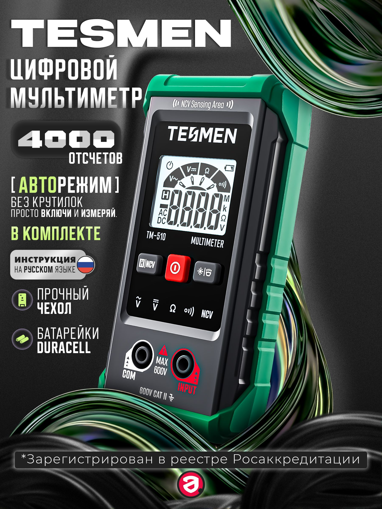

Мультиметр TESMEN TM-510
TESMEN TM-510 — это компактный цифровой мультиметр с автоопределением режима для измерения напряжения, сопротивления и проверки цепи. Также у него есть бесконтактное обнаружение переменного напряжения (NCV).

Документация
Характеристики
Подробнее
Модель TM-510 предназначена для бытовых и DIY-задач, где нужно быстро проверить напряжение, целостность цепи или сопротивление без ручного выбора диапазона. По данным производителя, прибор поддерживает интеллектуальный режим измерения, автоматический выбор диапазона и бесконтактное обнаружение напряжения с визуальной и звуковой индикацией. Корпус снабжён силиконовой защитой, а сам мультиметр рассчитан на повседневное использование и удобную переноску. Это не токовые клещи и не универсальный лабораторный прибор: ток он не измеряет.